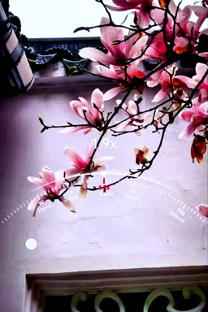

长期深耕苏州本地历史文化的研究与传播，全网文旅短视频粉丝8万余人。擅长以老照片、古画、老地图等影像资料还原姑苏千年风貌，讲解生动风趣、通俗易懂，贴近中老年受众的认知习惯。
历史文化栏目，走街串巷讲苏州，把街巷故事讲给苏州人听。
📱 封子老师讲的一个故事 文星阁：是塔、是楼，还藏着一个"风水局"？ 苏州大学天赐庄校区的这座"方塔"，与双塔、长洲县学大成殿遥相呼应——三个点接连打卡，才能把最佳的气运吸纳。带上娃，一起去沾沾这无与伦比的文脉之气。 ▶ 点击观看古城探秘栏目，在阊门城墙与深巷旧宅间寻找被遗忘的谜底。
📱 封子老师讲的一个故事 登阊门，读城墙 跟着镜头登上阊门城墙、钻进深巷旧宅，把被时间藏起来的苏州，一层一层"侦破"出来。 ▶ 点击观看系列短视频作品，以侦探视角细读吴地文史，趣味破案式讲解。
📱 封子老师讲的一个故事 跟着"吴小地"破案 小侦探"吴小地"带你出发——抽丝剥茧，一案一讲，文史知识藏在案情里。 ▶ 点击观看系列短视频作品，逐段解读清代长卷，两百年前的苏州跃然眼前。
📱 封子老师讲的一个故事 一卷《姑苏繁华图》，半部江南史 逐段细读清代长卷，两百年前苏州的市井烟火，一幕幕重新亮起来。 ▶ 点击观看2026年秋季起受聘于姑苏区老年大学 · 在古城实景中品读江南文脉
以史料图文系统梳理吴地千年文脉——从吴越春秋到明清繁华，一讲一主题，听得懂、记得住。
带领学员走进历史现场，即兴传授手机摄影技巧，把课堂搬进千年古城。
老照片、古画、老地图信手拈来，让千年姑苏在课堂上"活"过来。
讲解生动风趣、通俗易懂，专为中老年学员量身定制认知节奏。
五堂户外课走进历史现场，站在故事发生的地方听故事。
即兴传授手机摄影技巧，学员边走、边学、边拍，收获双重能力。

实拍示范：用手机拍 300 岁的二乔玉兰 取景、变焦、构图，一部手机全搞定 ▶ 点击观看